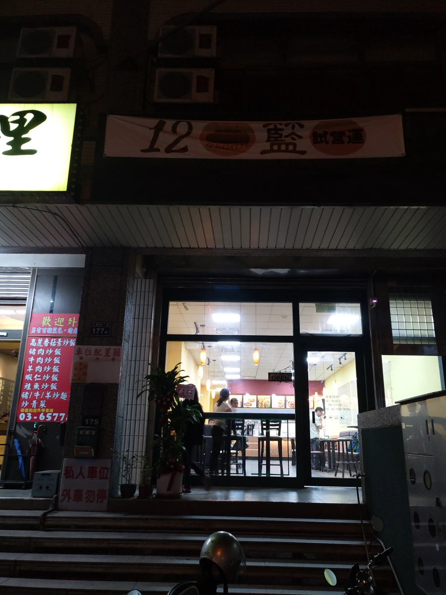
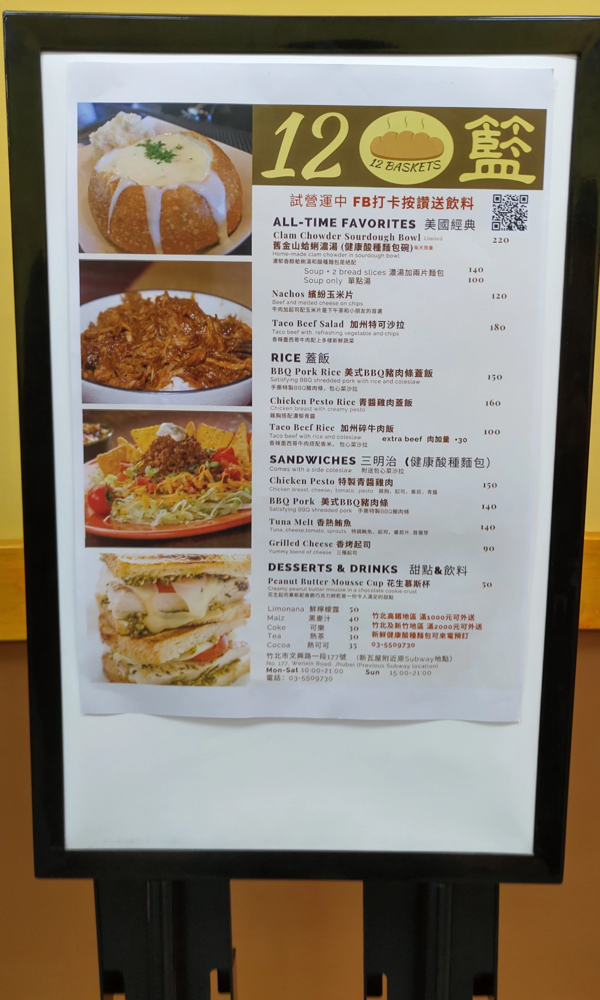
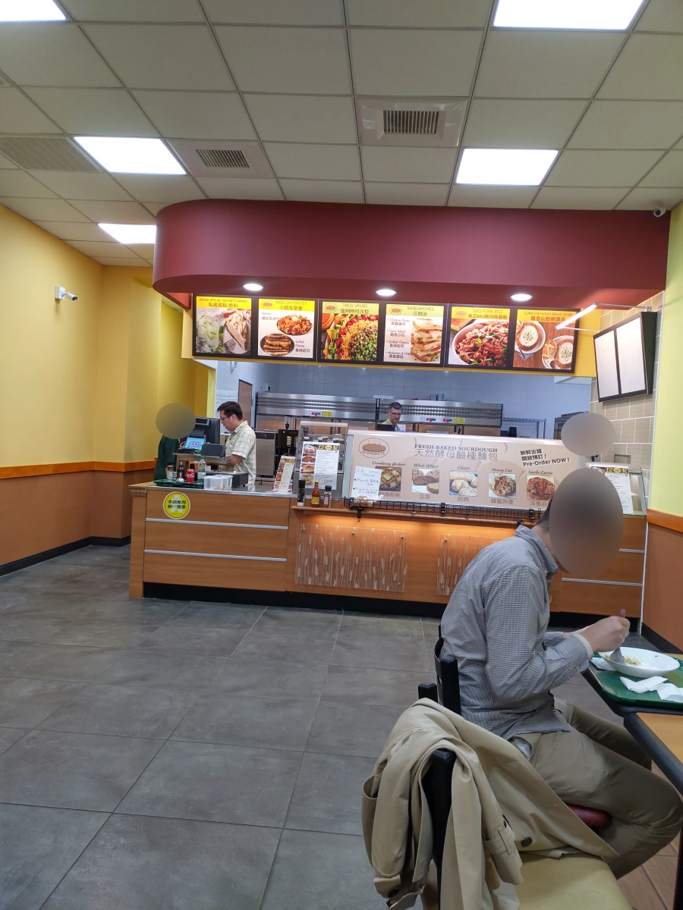
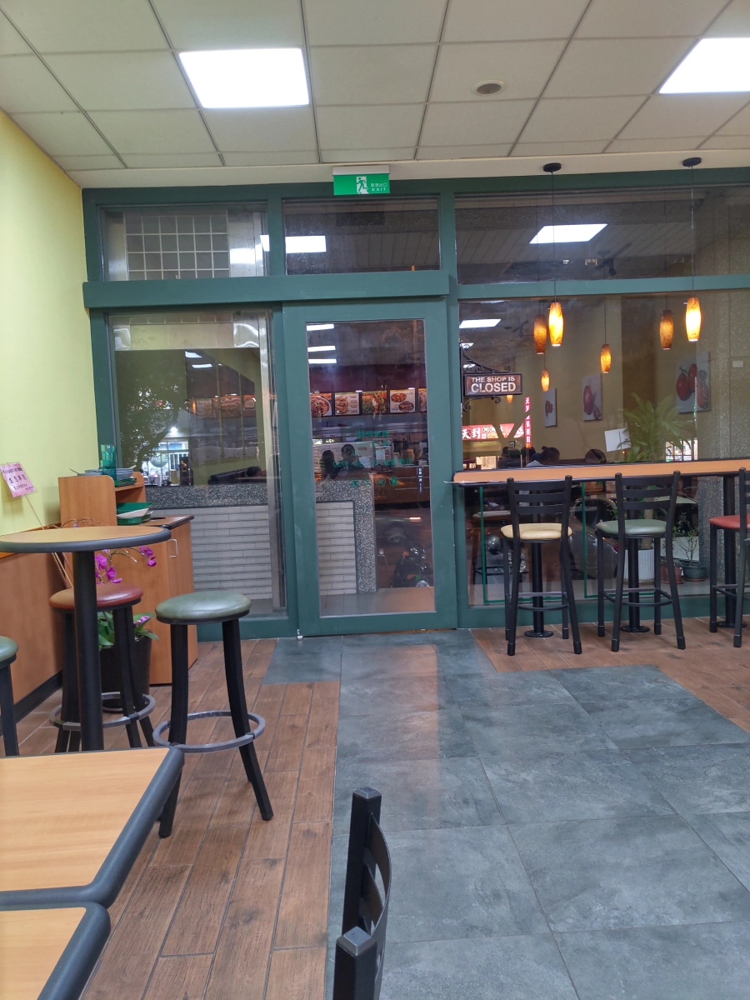
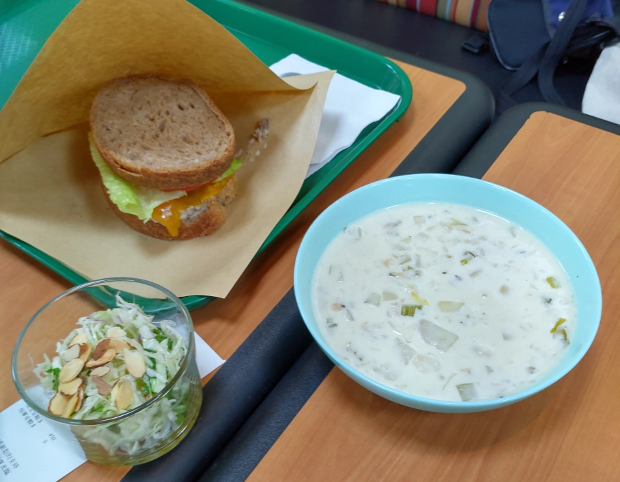
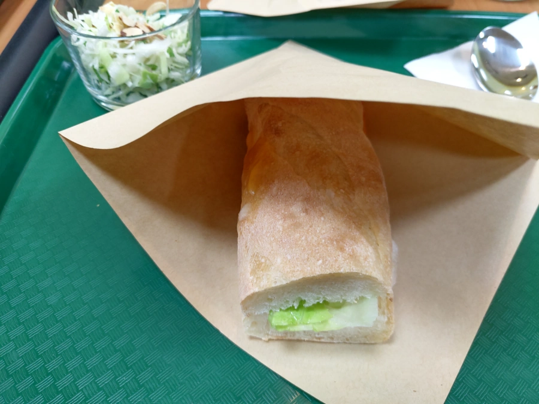
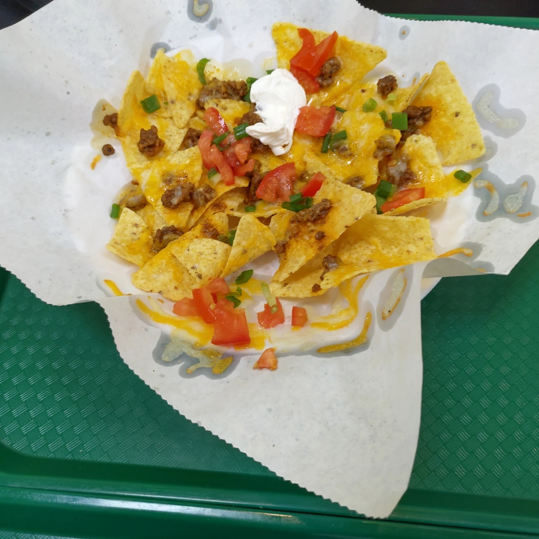

[竹北] 12 Baskets 12籃
| 餐廳名稱: | 12籃 官方網站 |
|---|---|
| 12籃 Facebook 粉絲頁 | |
| 地 址: | 新竹縣竹北市文興路177號 |
| 營業時間: | 週一~週六 10:00~21:00 |
| 週日 公休 | |
| 電 話: | 03 550 9730 |
金牙貓曾經留學美國一年半，對美國是有點感情。 聽到竹北有間美國人開的餐廳 - 12籃，就來試試看。 它賣的是 舊金山漁人碼頭 的 Clam Chowder ，德州老墨的 Taco Salad 或是 玉米片Nachos ，紐約的 魯賓三明治， 以色列的 薄荷檸檬汁，還有 由 花生慕斯、巧克力脆片堆疊成的 花生慕斯杯 甜點。
金牙貓窮學生時期曾經跟同學在 漁人碼頭(Fisherman’s Wharf，以 Pier 39 最出名) 一起三個人吃一隻螃蟹，還看到海豹在遊艇旁討東西吃。 美國很多地方都賣 Clam Chowder ，當時不知道是漁人碼頭名產，無緣在漁人碼頭喝一碗 Clam Chowder ， 不過應該都差不多吧。
店家在文興路上，原來 Subway 的地方，隔壁是梁姊快炒。需要爬幾個階梯上去。 附近停車略不便，我到的時間略晚，停到新瓦屋那一側。 
12籃 這名字一聽就猜是基督徒的，上網一查，原來是那有名的 5餅2魚的故事。耶穌把5餅2魚分給5000人吃， 沒想到5000人都能吃飽，把吃剩的食物收集起來，竟然裝滿12個籃子。難怪很多店名都叫做 5餅2魚 或 12籃。
也許是沿用 Subway 的櫃檯、廚房。菜單都印在櫃檯前，我拍這塊擺在附近的板子，內容差不多。 記得”檢視圖片”後，再放大到100%，才會看到整張圖的完整解析度(1200 x 2000 pixels)。 
最裡面那位老外，就是美國人老闆吧，聽說待過以色列，現在落腳台灣。 收銀機前面的老中，英文是 Native English Speaker 的程度，中文有很輕微的老外口音，大概是小留學生出身的吧。 其實還有一位女性工作人員，不熟中文。陸續來兩三位熟人，有進廚房幫忙的，猜測是同個教會的人相挺。 
當時客人大約半滿的，趁沒人的瞬間，拍一張。 
右邊是 Clam Chowder ，當天沒很餓，所以沒選 麵包碗版本(220元) 或 兩片麵包 版本(140元)，選了不附麵包的 100元版本。想想 如果麵包碗，大概吃不下吧。湯蠻好喝的， 味道跟 Costco 的 Clam Chowder 罐頭味道不一樣。
左邊是 香熱鮪魚三明治，三明治都會附一個小沙拉。 麵包應該都是店家自製的，12籃的文宣蠻強調麵包的。麵包部分香香的，覺得鮪魚略少，口味略輕。
所謂的 魯賓三明治(Reuben sandwich)應該是用兩片黑麥麵包夾著鹹牛肉、德國泡菜和瑞士起司。 菜單中的三明治類就沒牛肉的版本啊，看起來除了黑麥麵包，其他都改了。 
香烤起司三明治，一樣附一個小沙拉，底下有醬汁，沙拉還算清爽。三明治是小朋友選的一個沒肉的版本，味道也是略輕。 
Nachos 繽紛玉米片，這道菜還不錯吃，墨西哥玉米片上面灑了起司、小番茄塊、鹹香絞肉，沾著中間那坨 優格，算是市售玉米片的豪華升級。 
美國沿襲歐洲文化，兩百多年下來，大概就是誕生一些粗曠的美國食物。要精緻一點的，可能要法國或義大利的料理。 想嚐鮮美國食物的可以去試試， 長期還是要靠教友們支持吧。